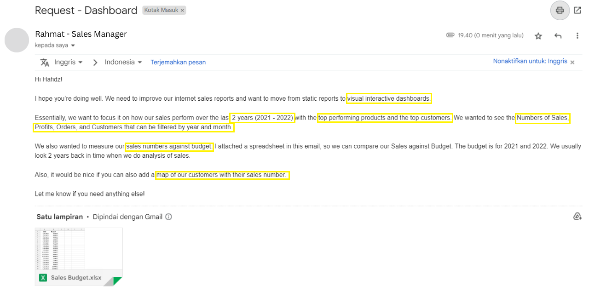
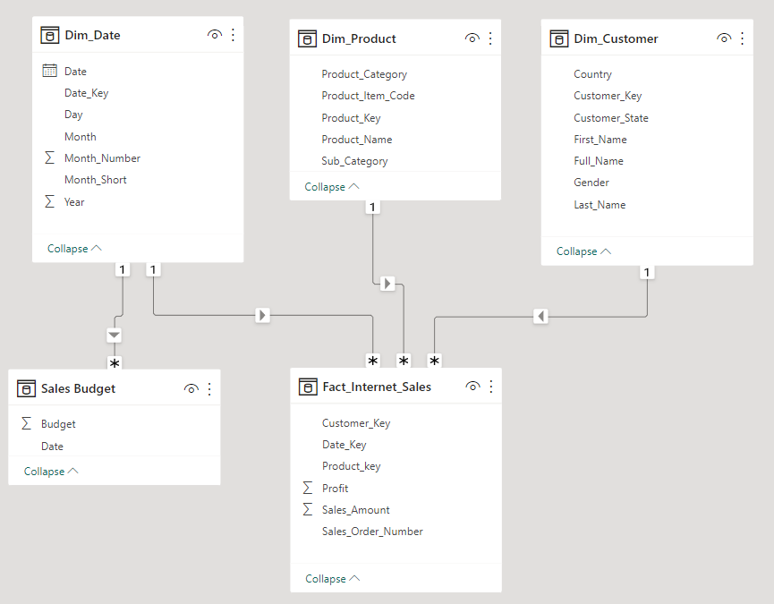
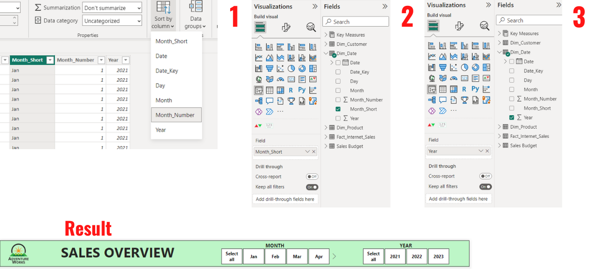
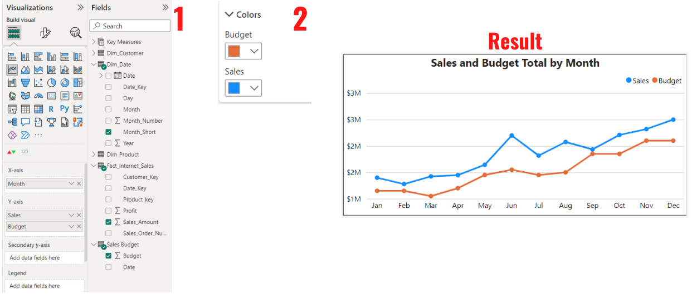
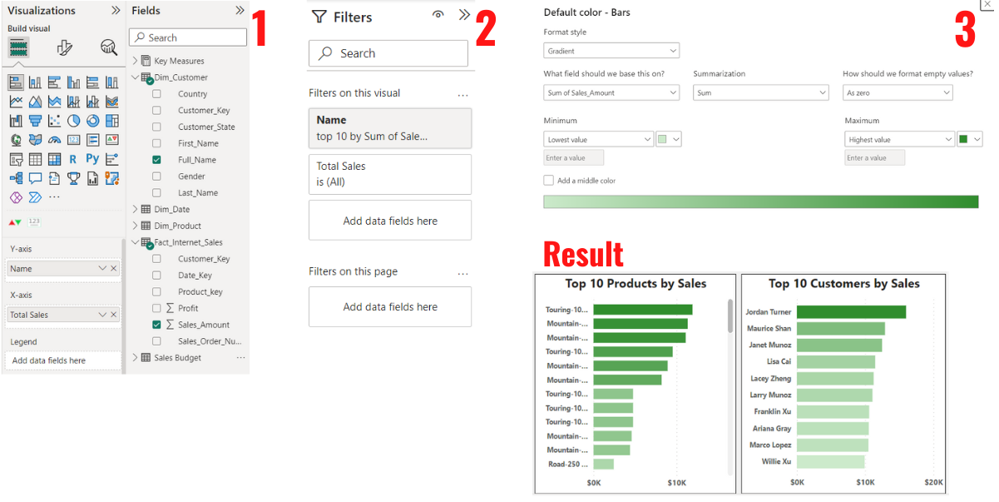
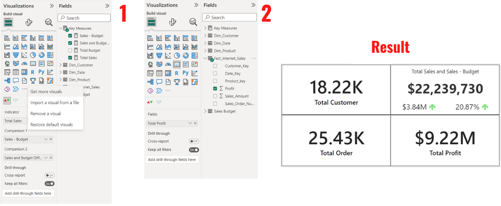
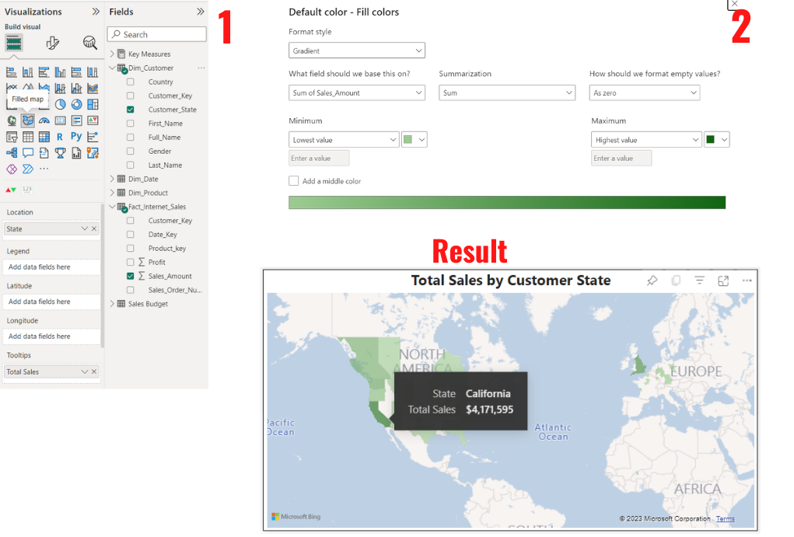

AdventureWorks Sales Analysis
An analysis on AdventureWorks Sales Performance
Click here for Github Repository that contains all the files in this projectIntroduction
After learning more about data, I wanted to test my SQL skill and my Data Visualization skill, and I think the best way to improve is by doing a project, therefore I create this simple Sales Analysis Project.
Sales Analysis is a process of using data to understand how the business performs in terms of sales. With a dashboard as the end result of this project, we will be able to gather valuable insights from it, and analyze AdventureWorks Sales Performance.
The Data
AdventureWorks Database is a sample database that provided by Microsoft. AdventureWorks database supports standard online transaction processing scenarios for a fictitious bicycle manufacturer - Adventure Works Cycles. More on AdventureWorks Database..
Software Used
|
|
| Microsoft Power BI | Building Dashboard and Visualization |
Objective
The objective is given by a fictitious Sales Manager (Rahmat) through e-mail, below is the e-mail.
From that E-mail we can conclude that our goal is to Create Interactive Dashboard:
- That shows the numbers of sales, profits, orders, and customers
- That shows the top performing products and customers
- That shows the numbers of sales against budget
- That shows map of customer with their sales number
And an additional things I'm going to do is gather some insights from the dashboard.
Chapter 1 - SQL
Query the data needed from the database.
Before we start loading the data to Power BI, the first thing we need to do is query
or request data from the database system which in this project called AdventureWorksDW2019 Database.
The AdventureWorksDW2019 Database contains tables from multiple aspects of the company like customer, employee, sales, etc.
This is where SQL skills come in handy, we can request a data that we only need without including other unused tables and we
can also transform some of the data to match the spesific format that we want.
The Table that we going to use is:
- DimCustomer
- DimDate
- DimProduct
- FactInternetSales
Dim is for Dimension Table, and Fact is for Fact Table. The main difference is Fact Tables contains Measurement, metrics, or facts about business process while Dimension table is a companion to Fact Table that contains descriptive attributes.
There are 4 query files that contains SQL code to query the data needed, here are the codes.
DimCustomer SQL Code
DimDate SQL Code
DimProduct SQL Code
FactInternetSales SQL Code
Chapter 2 - Power BI
After we finished querying all data that we need, we're going to extract the result into .csv file. After that, load the extracted result + Sales Budget spreadsheet that given via E-mail into Microsoft Power BI to build the Dashboard.
Relationship Data Model
This is the Relationship Data Model after we import all the data, from here we are able to see the difference between dimension table and fact table easier, as the fact table connects to multiple dimension table.
Creating Key Measure for Calculating Sales and Budget Differences
We're going to create that can show the Sales - Budget number and Sales/Budget differences Percentage.
There are 4 measures that we're going to create to achieve that:
- Total Sales = SUM(Fact_Internet_Sales[Sales_Amount])
- Total Budget = SUM('Sales Budget'[Budget])
- Sales - Budget = [Total Sales] - [Total Budget]
- Sales and Budget Differences = ([Total Sales]-[Total Budget])/[Total Budget]
Slicer for month and year
The first thing to do is to create a slicer that can filter all the values in the dashboard to selected month and year.
- Sort the Month_Short column by Month_Number to prevent the system sorting by alphabet.
- Click the slicer icon to build a slicer, and insert Month_short to the field.
- After formatting the slicer, copy & paste it, and replace Month_Short with Year in the field.
Line Chart
Next, we're going to create a Line Chart that can show Sales vs Budget Overtime.
- Click Line Chart Icon and put Month_Short in X Axis and Sales_Amount and Budget in Y Axis.
- Change the color of Sales to Blue and Budget to orange to make a clear distinction between them.
Top 10 Products and Customers
Next, we're going to create a Bar Chart that can show The Top 10 Customers and Products by Sales.
- Click the Bar Chart Icon and put Full_Name in Y Axis and Sales_Amount in X Axis.
- Open the Filter Menu and filter the name by Top 10 of the Sales_Amount.
- Last thing to do is to add Color formatting. The highest value will be bolder, and lowest will be lighter.
- Copy paste the bar chart and replace the Full_Name in Y Axis to Product Name from DimProduct Table and also add Sub_Category to Tooltips so we can see the sub category. So we don't need to recreate the bar chart again for the products.
The Numbers
Next is The numbers. These number will be the main thing that people see because the numbers will change based on the selected month, year and even products/customers when they click it.
- For the first number we're going to need to import a new visual, the name is Dynamic KPI. After that we're going to click the icon and put the measures we create in the beginning, Sales_Amount in Indicator, Sales - Budget in Comparison 1, and Sales and Budget Difference Percentage in Comparison 2.
- For the other 3 numbers we just need a normal card and put Profit into fields, do the same for Total Customer (Customer_Key) and Total Order (Sales_Order_Number)
Map of Customers by sales
Last step is creating Map of customers by their sales. The higher the sales the bolder the color.
- Click the filled Map icon and put Customer_State in Location field and Sales_Amount in Tooltips.
- Color Formatting the map by Sum of Sales_Amount, and give bolder color for highest amount and lighter color for lowest.
Chapter 3 - Result
The Dashboard

Insight and Recommendation
These are the insights that I obtained from the dashboard and also I provide some recommendation based on the insight.
|
Total Sales in 2021 is $5,842,485 and $16,351,550 in 2022, this means the Sales has increased 180% in 2022. |
|
| Line Chart Sales vs Budget by Month |
|
|
| Bar Chart Top 10 Customers | Jordan Turner, Maurice Shan, and Janet Munoz is the Top 3 customers by their spending, they are the customers that spend more than $10K. |
|
| Bar Chart Top 10 Products | Touring Bikes and Mountain Bikes dominates the top 10 products, with 1 Road bikes in number 10 spot. |
|
|
California is the highest contributor out of all states with 4,17 milion worth of Total Sales, 1.75 milion worth of profit, 4333 Customers, and 4981 of Orders. |
|
Conlusion
AdventureWorks Cycle has gained a massive amount of Sales increase in the year of 2022, with this sales increase, that means the profit is getting bigger, brand awareness is growing, customer is increasing and they will spend more. These all are a really good positive, but there also room for improvement such as expanding the business, optimizing Inventory, retain the customers, and analyzing different aspects of the business. A business should never be satisfied, always achieve to grow and expand.